Code
library(tidyverse)
library(easystats)
library(patchwork)
library(magick)
library(ggside)library(tidyverse)
library(easystats)
library(patchwork)
library(magick)
library(ggside)In this neuroaesthetics experiment, gaze data was collected through webgazer.js during each fixation cross and subsequent stimuli.
# Gaze data
df <- rbind(
read.csv("../data/rawdata_eyetracking1.csv"),
read.csv("../data/rawdata_eyetracking2.csv")
) |>
mutate(
# (0, 0) = screen centre; units = fraction of screen width
# x: ranges [-0.5, +0.5]; y: ranges ≈ [-0.28, +0.28] for 16:9
z_x = (x - ScreenWidth / 2) / ScreenWidth,
z_y = (y - ScreenHeight / 2) / ScreenWidth, # divided by the same constant so that anistropy preserved (z_y is expressed in % of screen width)
# Stimulus boundaries — same shift
z_Stimulus_left = (Stimulus_left - ScreenWidth / 2) / ScreenWidth,
z_Stimulus_right = (Stimulus_left + Stimulus_width - ScreenWidth / 2) / ScreenWidth,
z_Stimulus_top = (Stimulus_top - ScreenHeight / 2) / ScreenWidth,
z_Stimulus_bottom = (Stimulus_top + Stimulus_height - ScreenHeight / 2) / ScreenWidth,
# GazeWithin — same comparisons still valid
GazeWithin_Strict = z_x >= z_Stimulus_left & z_x <= z_Stimulus_right &
z_y >= z_Stimulus_top & z_y <= z_Stimulus_bottom,
GazeWithin_Lenient = z_x >= (z_Stimulus_left - 0.05) & z_x <= (z_Stimulus_right + 0.05) &
z_y >= (z_Stimulus_top - 0.05) & z_y <= (z_Stimulus_bottom + 0.05),
# (0, 0) = centre of the jsPsych stimulus container
# ±0.5 in x = left/right edge of container; AR preserved (both ÷ Stimulus_width)
z_x_stim = (x - (Stimulus_left + Stimulus_width / 2)) / Stimulus_width,
z_y_stim = (y - (Stimulus_top + Stimulus_height / 2)) / Stimulus_width,
)
# Load the data of participants, which includes calibration scores
df_ppt <- read.csv("../data/data_participants.csv") |>
select(Participant, starts_with("Eyetracking_")) |>
pivot_longer(-Participant, names_to="Index", values_to="Value") |>
filter(!is.na(Value)) |>
mutate(Participant = fct_reorder(Participant, Value)) |>
mutate(Index = str_remove(Index, "Eyetracking_Validation"),
Index = ifelse(Index == "1", "Initial", "Midtask"))
# Keep only participants that were not rejected as outliers
df <- df[df$Participant %in% df_ppt$Participant,]participant_dup <- df |>
arrange(Participant, Item, Stimulus, t) |>
group_by(Participant, Item, Stimulus) |>
mutate(dup = x == lag(x) & y == lag(y)) |>
ungroup() |>
group_by(Participant) |>
summarise(prop_dup = mean(dup, na.rm = TRUE), .groups = "drop")
# Candidates for full removal from eyetracking module
broken_ppts <- participant_dup |> filter(prop_dup > 0.05) |> pull(Participant)
length(broken_ppts) # expect ~14[1] 21participant_dup |>
mutate(Flagged = Participant %in% broken_ppts,
Participant = fct_reorder(Participant, prop_dup)) |>
ggplot(aes(x = prop_dup, y = Participant, fill = Flagged)) +
geom_bar(stat = "identity", position = "stack") +
geom_vline(xintercept = 0.05, linetype = "dashed", color = "black", linewidth = 0.8) +
scale_fill_manual(values = c("FALSE" = "#4CAF50", "TRUE" = "firebrick")) +
theme_minimal() +
theme(axis.text.y = element_blank()) +
labs(title = "Proportion of duplicate samples per participant",
x = "Proportion of duplicate samples",
y = "Count", fill = NULL)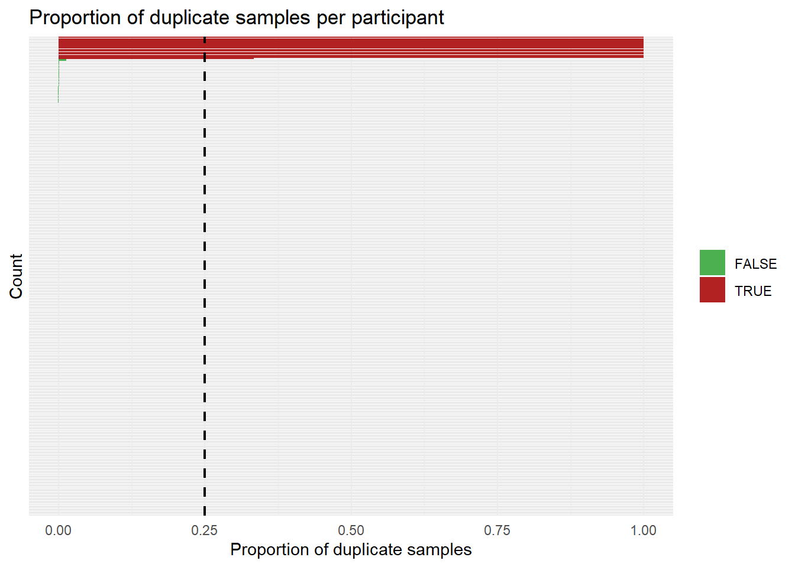
df <- df |> filter(!Participant %in% broken_ppts)We removed 21 participants (7.09%) with >25% duplicate samples (frozen gaze / face loss).
Outside screen = face loss / artifact.
We removed 179361 samples (9.20%).
df <- df |>
filter(
x >= 0, x <= ScreenWidth,
y >= 0, y <= ScreenHeight
)vel_threshold <- 6 # 6 stimulus-widths/sec ≈ upper bound of real saccade
# Compute velocity on the full df (pre-filter)
df_vel <- df |>
arrange(Participant, Item, Stimulus, t) |>
mutate(
dx = z_x_stim - lag(z_x_stim),
dy = z_y_stim - lag(z_y_stim),
dt = t - lag(t),
velocity = sqrt(dx^2 + dy^2) / dt,
.by = c("Participant", "Item", "Stimulus")
) |>
filter(!is.na(velocity), is.finite(velocity))
prop_vel_dropped <- mean(df_vel$velocity >= vel_threshold, na.rm = TRUE)
df_vel |>
mutate(Dropped = velocity >= vel_threshold) |>
ggplot(aes(x = pmin(velocity, 12), fill = Dropped)) + # cap at 12 for readability
geom_histogram(bins = 200, alpha = 0.8, position = "stack") +
geom_vline(xintercept = vel_threshold,
linetype = "dashed", color = "black", linewidth = 0.8) +
annotate("text", x = vel_threshold, y = Inf,
label = paste0("threshold = ", vel_threshold,
"\n", round(prop_vel_dropped * 100, 1), "% dropped"),
vjust = 1.5, hjust = -0.1, size = 3, color = "black") +
scale_fill_manual(values = c("FALSE" = "#4CAF50", "TRUE" = "firebrick"),
labels = c("Kept", "Dropped")) +
scale_x_continuous(breaks = seq(0, 12, 2.5)) +
theme_minimal() +
labs(title = "Sample velocity",
subtitle = "Implausibly fast transitions = blinks / face loss",
x = "Velocity (stim-widths / sec; capped at 12)", y = "Count", fill = NULL)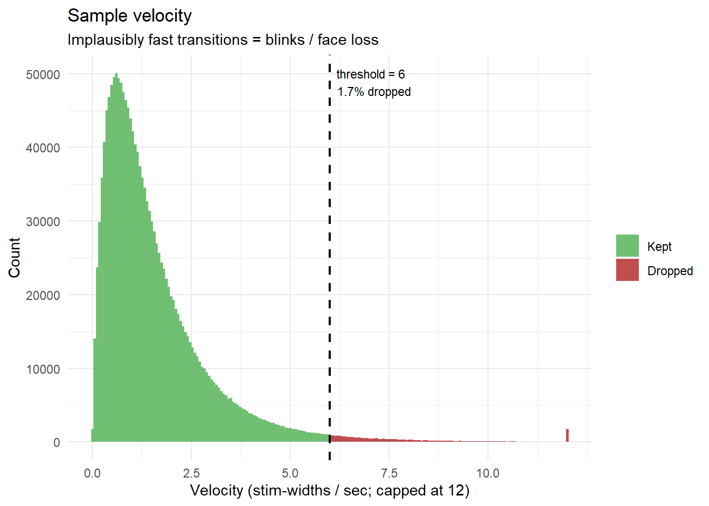
df <- df |>
arrange(Participant, Item, Stimulus, t) |>
mutate(
dx = z_x_stim - lag(z_x_stim),
dy = z_y_stim - lag(z_y_stim),
velocity = sqrt(dx^2 + dy^2) / (t - lag(t)), # units/sec in stim-relative space
.by = c("Participant", "Item", "Stimulus")
) |>
filter(is.na(velocity) | velocity < vel_threshold | velocity == 0) |>
select(-dx, -dy, -velocity) # Safe Correlation
safe_cor <- function(x, y) {
if (length(x) < 3) return(NA_real_) # too few points
if (sd(x, na.rm = TRUE) < 1e-10 ||
sd(y, na.rm = TRUE) < 1e-10) return(NA_real_) # zero variance
cor(x, y, use = "complete.obs")
}
# BCEA — Bivariate Contour Ellipse Area (Crossland & Rubin, 2002)
# Area of the ellipse containing proportion `p` of gaze (assuming bivariate normal).
# Units: squared stimulus-widths.
# Small → concentrated gaze (or frozen — guard with SD check upstream)
# Large → scattered, exploratory, or noisy
compute_bcea <- function(x, y, p = 0.68) {
ok <- !is.na(x) & !is.na(y)
x <- x[ok]; y <- y[ok]
if (length(x) < 3) return(NA_real_)
sx <- sd(x); sy <- sd(y)
if (sx < 1e-10 || sy < 1e-10) return(NA_real_) # frozen → NA
rho <- cor(x, y)
k <- -2 * log(1 - p)
2 * pi * k * sx * sy * sqrt(max(0, 1 - rho^2)) # max() guards |rho| > 1 from floating point
}
# Normalised spatial entropy
# Discretise into a bins×bins grid → Shannon entropy normalised to [0, 1].
# ~1.0 = perfectly uniform scatter (random noise — bad)
# ~0.0 = all mass in one cell (frozen — already caught by SD, but visible here)
# ~0.3–0.6 = healthy fixation clusters across the image
compute_spatial_entropy <- function(x, y, n_grid = 10L) {
ok <- !is.na(x) & !is.na(y)
x <- x[ok]; y <- y[ok]
n_valid <- length(x)
if (n_valid < 2L) return(NA_real_)
counts <- table(
cut(x, breaks = n_grid),
cut(y, breaks = n_grid)
)
# Maximum achievable entropy is bounded by both the number of points
# (can't spread n points across more than n cells) and the grid size.
# Normalising by log2(n_grid^2) when n < n_grid^2 artificially deflates
# the score for data-sparse trials, making them look "focused" by artefact.
max_cells <- min(n_valid, n_grid^2L)
if (max_cells <= 1L) return(0) # only 1 reachable cell → entropy = 0
max_entropy <- log2(max_cells)
entropy::entropy(as.vector(counts), unit = "log2") / max_entropy
}
# Gini coefficient of a 2D KDE
# Measures concentration of the density surface.
# ~1 → density is sharply peaked (tight clusters — good)
# ~0 → density is flat / uniform (random scatter — bad)
# Sensitive to whether gaze *forms structure* rather than just spreading
compute_gini_kde <- function(x, y, n = 25) {
ok <- !is.na(x) & !is.na(y)
x <- x[ok]; y <- y[ok]
if (length(x) < 10) return(NA_real_)
z <- tryCatch(
as.vector(MASS::kde2d(x, y, n = n)$z),
error = function(e) NULL
)
if (is.null(z) || all(z == 0)) return(NA_real_)
z <- sort(z / sum(z)) # normalise to probability mass
n_z <- length(z)
2 * sum(seq_len(n_z) * z) / (n_z * sum(z)) - (n_z + 1) / n_z
}
# Convex hull area: robust alternative to BCEA -- doesn't assume bivariate-
# normal gaze, so a few outlier samples distort it less than they distort BCEA.
compute_hull_area <- function(x, y) {
ok <- !is.na(x) & !is.na(y)
x <- x[ok]; y <- y[ok]
if (length(x) < 3 || sd(x) < 1e-10 || sd(y) < 1e-10) return(NA_real_)
tryCatch({
h <- chull(x, y)
xh <- x[h]; yh <- y[h]
0.5 * abs(sum(xh * c(yh[-1], yh[1]) - c(xh[-1], xh[1]) * yh))
}, error = function(e) NA_real_)
}
# Total scanpath length: sum of consecutive sample-to-sample distances.
# A coarse "how much did gaze move overall" measure -- not a saccade count,
# just total trajectory length, which holds up much better under webgazer
# noise than trying to detect discrete fixations/saccades.
compute_path_length <- function(x, y, t) {
ok <- !is.na(x) & !is.na(y) & !is.na(t)
x <- x[ok]; y <- y[ok]; t <- t[ok]
if (length(x) < 2) return(NA_real_)
o <- order(t); x <- x[o]; y <- y[o]
sum(sqrt(diff(x)^2 + diff(y)^2))
}
# Straightness index: net displacement / total path length, in [0, 1].
# Low = wandered around; high = moved in essentially one direction.
# It's a ratio, so it's fairly insensitive to a handful of noisy jumps
# unless they dominate the whole path.
compute_straightness <- function(x, y, t) {
ok <- !is.na(x) & !is.na(y) & !is.na(t)
x <- x[ok]; y <- y[ok]; t <- t[ok]
if (length(x) < 2) return(NA_real_)
o <- order(t); x <- x[o]; y <- y[o]
path <- sum(sqrt(diff(x)^2 + diff(y)^2))
if (path < 1e-10) return(NA_real_)
disp <- sqrt((x[length(x)] - x[1])^2 + (y[length(y)] - y[1])^2)
disp / path
}
# Centroid shift between first and second half of the trial.
# Large = gaze relocated to a different part of the image partway through;
# near-zero = stable focus throughout.
compute_half_shift <- function(x, y, t) {
ok <- !is.na(x) & !is.na(y) & !is.na(t)
x <- x[ok]; y <- y[ok]; t <- t[ok]
n <- length(x)
if (n < 6) return(NA_real_)
o <- order(t); x <- x[o]; y <- y[o]
h <- floor(n / 2)
c1 <- c(mean(x[1:h]), mean(y[1:h]))
c2 <- c(mean(x[(h+1):n]), mean(y[(h+1):n]))
sqrt(sum((c1 - c2)^2))
}
# Dispersion ratio: 2nd-half spread / 1st-half spread.
# < 1 = gaze "settled"/consolidated over the trial; > 1 = became more
# exploratory over time. Relevant to initial-scan vs. sustained-appraisal
# distinctions in aesthetic judgment.
compute_dispersion_ratio <- function(x, y, t) {
ok <- !is.na(x) & !is.na(y) & !is.na(t)
x <- x[ok]; y <- y[ok]; t <- t[ok]
n <- length(x)
if (n < 6) return(NA_real_)
o <- order(t); x <- x[o]; y <- y[o]
h <- floor(n / 2)
d1 <- sqrt(var(x[1:h]) + var(y[1:h]))
d2 <- sqrt(var(x[(h+1):n]) + var(y[(h+1):n]))
if (is.na(d1) || d1 < 1e-10) return(NA_real_)
d2 / d1
}
# Max Bipartite Shift: Finds the true moment of gaze relocation
# Large = distinct spatial phases; near-zero = single stable focus
compute_max_shift <- function(x, y, t, min_samples = 5) {
ok <- !is.na(x) & !is.na(y) & !is.na(t)
x <- x[ok]; y <- y[ok]; t <- t[ok]
n <- length(x)
# Need enough samples to form two valid time blocks
if (n < min_samples * 2) return(NA_real_)
o <- order(t); x <- x[o]; y <- y[o]
# Precompute cumulative sums to avoid slow loops (O(N) optimization)
cx <- cumsum(x)
cy <- cumsum(y)
# Evaluate every valid split point 'k'
k <- min_samples:(n - min_samples)
# Centroids of the "Before k" phase
c1_x <- cx[k] / k
c1_y <- cy[k] / k
# Centroids of the "After k" phase
c2_x <- (cx[n] - cx[k]) / (n - k)
c2_y <- (cy[n] - cy[k]) / (n - k)
# Calculate distances for all possible splits and return the absolute max
max_dist <- max(sqrt((c1_x - c2_x)^2 + (c1_y - c2_y)^2))
return(max_dist)
}
# Macro Wandering: Scanpath length of the smoothed rolling centroid
# Low = stable appraisal; High = continuous exploration / wandering
compute_macro_wandering <- function(x, y, t, window_size = 10) {
ok <- !is.na(x) & !is.na(y) & !is.na(t)
x <- x[ok]; y <- y[ok]; t <- t[ok]
n <- length(x)
if (n < window_size * 2) return(NA_real_)
o <- order(t); x <- x[o]; y <- y[o]
# Compute rolling average to smooth out jitter and micro-saccades
roll_x <- stats::filter(x, rep(1/window_size, window_size), sides = 2)
roll_y <- stats::filter(y, rep(1/window_size, window_size), sides = 2)
# Remove NAs at the boundaries created by the rolling window
ok_roll <- !is.na(roll_x) & !is.na(roll_y)
roll_x <- roll_x[ok_roll]
roll_y <- roll_y[ok_roll]
# Path length of the macro-centroid
sum(sqrt(diff(roll_x)^2 + diff(roll_y)^2))
}
# Total Linear Drift: The absolute magnitude of spatial drift from start to finish
compute_drift_magnitude <- function(x, y, t) {
ok <- !is.na(x) & !is.na(y) & !is.na(t)
x <- x[ok]; y <- y[ok]; t <- t[ok]
if (length(x) < 5 || sd(t, na.rm = TRUE) < 1e-10) return(NA_real_)
# Normalize time to 0-1 so coefficients represent the total trial displacement
t_norm <- (t - min(t)) / (max(t) - min(t))
lm_x <- lm(x ~ t_norm)
lm_y <- lm(y ~ t_norm)
# Pythagorean theorem on the slopes (total X drift + total Y drift)
sqrt(coef(lm_x)[2]^2 + coef(lm_y)[2]^2)
}# ---- Main per-trial extractor ----------------------------------------------
extract_gaze_features <- function(data) {
x <- data$z_x_stim
y <- data$z_y_stim
t <- data$t
ok <- !is.na(x) & !is.na(y) & !is.na(t)
n_valid <- sum(ok)
x <- x[ok]; y <- y[ok]; t <- t[ok]
# Too little data to compute anything meaningful -- return n_samples only;
# group_modify()/bind_rows() will fill every other column with NA below.
if (n_valid < 2) return(tibble(n_samples = n_valid))
duration <- diff(range(t))
tibble(
# -- Data quantity / tracking quality --------------------------------
n_samples = n_valid,
duration = duration,
sampling_rate = n_valid / pmax(duration, 1e-6),
prop_within_strict = mean(data$GazeWithin_Strict[ok], na.rm = TRUE),
prop_within_lenient = mean(data$GazeWithin_Lenient[ok], na.rm = TRUE),
# -- Where on the image they looked -----------------------------------
centroid_x = mean(x), centroid_y = mean(y),
median_x = median(x), median_y = median(y),
prop_top = mean(y < 0), # upper vs. lower half
prop_left = mean(x < 0), # left vs. right half
prop_center = mean(sqrt(x^2 + y^2) < 0.33), # central-bias proxy
prop_center10 = mean(sqrt(x^2 + y^2) < 0.10),
prop_center25 = mean(sqrt(x^2 + y^2) < 0.25),
prop_center33 = mean(sqrt(x^2 + y^2) < 0.33),
# -- How spread out (classic + robust versions) -------------------------
sd_x = sd(x), sd_y = sd(y),
mad_x = mad(x), mad_y = mad(y),
range_x = diff(quantile(x, c(.05, .95))),
range_y = diff(quantile(y, c(.05, .95))),
bcea = compute_bcea(x, y, p = 0.68),
bcea50 = compute_bcea(x, y, p = 0.50),
bcea98 = compute_bcea(x, y, p = 0.98),
hull_area = compute_hull_area(x, y),
# entropy = compute_spatial_entropy(x, y, n_grid = 20),
entropy2 = compute_spatial_entropy(x, y, n_grid = 2),
entropy3 = compute_spatial_entropy(x, y, n_grid = 3),
entropy4 = compute_spatial_entropy(x, y, n_grid = 4),
entropy5 = compute_spatial_entropy(x, y, n_grid = 5),
entropy6 = compute_spatial_entropy(x, y, n_grid = 6),
# entropy8 = compute_spatial_entropy(x, y, n_grid = 8),
entropy10 = compute_spatial_entropy(x, y, n_grid = 10),
# entropy12 = compute_spatial_entropy(x, y, n_grid = 12),
# entropy14 = compute_spatial_entropy(x, y, n_grid = 14),
entropy16 = compute_spatial_entropy(x, y, n_grid = 16),
entropy18 = compute_spatial_entropy(x, y, n_grid = 18),
entropy20 = compute_spatial_entropy(x, y, n_grid = 20),
entropy21 = compute_spatial_entropy(x, y, n_grid = 21),
entropy22 = compute_spatial_entropy(x, y, n_grid = 22),
entropy24 = compute_spatial_entropy(x, y, n_grid = 24),
entropy26 = compute_spatial_entropy(x, y, n_grid = 26),
entropy30 = compute_spatial_entropy(x, y, n_grid = 30),
gini_kde = compute_gini_kde(x, y, n = 25),
gini_kde10 = compute_gini_kde(x, y, n = 10),
gini_kde50 = compute_gini_kde(x, y, n = 50),
gini_kde100 = compute_gini_kde(x, y, n = 100),
# -- Temporal dynamics ---------------------------------------------------
drift_x = safe_cor(t, x), # signed: direction, not just magnitude
drift_y = safe_cor(t, y),
path_length = compute_path_length(x, y, t),
mean_speed = compute_path_length(x, y, t) / pmax(duration, 1e-6),
straightness = compute_straightness(x, y, t),
half_shift = compute_half_shift(x, y, t),
dispersion_ratio = compute_dispersion_ratio(x, y, t),
max_shift5 = compute_max_shift(x, y, t, min_samples = 5),
max_shift15 = compute_max_shift(x, y, t, min_samples = 15),
max_shift30 = compute_max_shift(x, y, t, min_samples = 30),
macro_wandering5 = compute_macro_wandering(x, y, t, window_size = 5),
macro_wandering10 = compute_macro_wandering(x, y, t, window_size = 10),
macro_wandering30 = compute_macro_wandering(x, y, t, window_size = 30),
drift_magnitude = compute_drift_magnitude(x, y, t)
)
}
# ---- Apply per Participant x Item ------------------------------------------
df_features <- df |>
filter(Stimulus == "Image") |>
group_by(Participant, Item) |>
group_modify(~ extract_gaze_features(.x)) |>
ungroup()# ---- Quality-control thresholds --------------------------------------------
thresh_n_samples <- 20
thresh_sd_min <- 0.02
thresh_sd_max <- 0.60
thresh_prop_within <- 0.50
thresh_drift <- 1.0 # stim-widths of total linear displacement
thresh_entropy <- c(0.5, 0.975)
# ---- Trial-level QC classification -----------------------------------------
df_features <- df_features |>
mutate(
Status = case_when(
n_samples < thresh_n_samples ~
"Dropped (too few samples)",
is.na(sd_x) | is.na(sd_y) ~
"Dropped (frozen/single point)",
sd_x < thresh_sd_min | sd_y < thresh_sd_min ~
"Dropped (frozen gaze)",
sd_x > thresh_sd_max | sd_y > thresh_sd_max ~
"Dropped (pure noise)",
prop_within_lenient < thresh_prop_within ~
"Dropped (never on screen)",
drift_magnitude > thresh_drift ~ "Dropped (severe drift)",
entropy5 > thresh_entropy[2] | entropy5 < thresh_entropy[1] ~
"Dropped (random scatter)",
TRUE ~ "Kept"
)
)flag_for_plot <- function(data, criterion) {
criterion <- rlang::enquo(criterion) # capture the expression + its environment, unevaluated
data |>
mutate(
.flag_this = !!criterion, # inject it, now evaluated *inside* mutate's data mask
PlotCategory = case_when(
.flag_this ~ "Dropped (this criterion)",
Status != "Kept" ~ "Dropped (other criterion)",
TRUE ~ "Kept"
),
PlotCategory = factor(PlotCategory,
levels = c("Kept", "Dropped (other criterion)", "Dropped (this criterion)"))
) |>
arrange(PlotCategory)
}
palette <- c("Kept" = "#4CAF50",
"Dropped (other criterion)" = "orange",
"Dropped (this criterion)" = "firebrick")
p_sampling <- df_features |>
ggplot(aes(sampling_rate, fill = Status != "Kept")) +
geom_histogram(bins = 50) +
scale_fill_manual(values = c("#4CAF50","firebrick")) +
theme_minimal() +
labs(
title = "Effective sampling rate",
x = "Samples / second",
y = "Trials",
fill = NULL
)
# n_samples -------------------------------------------------------------------
p_n <- df_features |>
mutate(Dropped = n_samples < thresh_n_samples) |>
ggplot(aes(x = n_samples, fill = Dropped)) +
geom_histogram(bins = 50, alpha = 0.8, position = "stack") +
geom_vline(xintercept = thresh_n_samples,
linetype = "dashed", color = "black", linewidth = 0.8) +
annotate("text", x = thresh_n_samples, y = Inf,
label = paste0("< ", thresh_n_samples),
vjust = 1.5, hjust = -0.2, size = 3) +
scale_fill_manual(values = c("FALSE" = "#4CAF50", "TRUE" = "firebrick")) +
theme_minimal() +
labs(title = "n_samples per trial",
subtitle = "Too few = dropped frames",
x = "N gaze samples", y = "N trials", fill = NULL)
# sd_x vs sd_y ----------------------------------------------------------------
p_sd <- df_features |>
flag_for_plot(sd_x < thresh_sd_min | sd_y < thresh_sd_min |
sd_x > thresh_sd_max | sd_y > thresh_sd_max) |>
ggplot(aes(x = sd_x, y = sd_y)) +
geom_point(aes(color = PlotCategory), alpha = 0.35, size = 1.2) +
geom_vline(xintercept = c(thresh_sd_min, thresh_sd_max),
linetype = "dashed", color = "black", linewidth = 0.7) +
geom_hline(yintercept = c(thresh_sd_min, thresh_sd_max),
linetype = "dashed", color = "black", linewidth = 0.7) +
annotate("text", x = thresh_sd_min, y = Inf,
label = paste0("min=", thresh_sd_min),
vjust = 1.5, hjust = -0.1, size = 3) +
annotate("text", x = thresh_sd_max, y = Inf,
label = paste0("max=", thresh_sd_max),
vjust = 1.5, hjust = 1.1, size = 3) +
scale_color_manual(values = palette, na.translate = FALSE) +
coord_cartesian(xlim = c(0, 0.7), ylim = c(0, 0.7)) +
theme_minimal() +
labs(title = "Gaze SD (X vs Y)",
subtitle = "Too low = frozen; too high = pure noise",
x = "SD x (stim-relative)", y = "SD y (stim-relative)", color = NULL,
caption = "17 trials omitted: SD undefined (single-sample trials, already dropped)") +
ggside::geom_xsidehistogram(aes(y = after_stat(density)), alpha = 0.4, fill = "darkgrey", bins = 100) +
ggside::geom_ysidehistogram(aes(x = after_stat(density)), alpha = 0.4, fill = "darkgrey", bins = 100) +
ggside::theme_ggside_void()
# prop_within -----------------------------------------------------------------
p_prop <- df_features |>
mutate(Dropped = prop_within_lenient < thresh_prop_within) |>
ggplot(aes(x = prop_within_lenient, fill = Dropped)) +
geom_histogram(bins = 40, alpha = 0.8, position = "stack") +
geom_vline(xintercept = thresh_prop_within,
linetype = "dashed", color = "black", linewidth = 0.8) +
annotate("text", x = thresh_prop_within, y = Inf,
label = paste0("< ", thresh_prop_within),
vjust = 1.5, hjust = -0.2, size = 3) +
scale_fill_manual(values = c("FALSE" = "#4CAF50", "TRUE" = "firebrick")) +
theme_minimal() +
labs(title = "Prop. samples within stimulus",
subtitle = "Almost never on screen = unusable trial",
x = "Proportion within bounds", y = "N trials", fill = NULL)
# range_x vs range_y ----------------------------------------------------------
p_range <- df_features |>
flag_for_plot(FALSE) |>
ggplot(aes(x = range_x, y = range_y)) +
geom_point(aes(color = PlotCategory), alpha = 0.3, size = 1.2) +
geom_vline(xintercept = thresh_sd_max * 2, # approximate: wide range ≈ high SD
linetype = "dashed", color = "black", linewidth = 0.7) +
geom_hline(yintercept = thresh_sd_max * 2,
linetype = "dashed", color = "black", linewidth = 0.7) +
theme_minimal() +
labs(title = "Gaze range (5th–95th pctile)",
subtitle = "Extremely wide = scanning whole screen randomly",
x = "Range x (stim-relative)", y = "Range y (stim-relative)") +
scale_color_manual(values = palette, na.translate = FALSE) +
ggside::geom_xsidehistogram(aes(y = after_stat(density)), alpha = 0.4, fill = "darkgrey", bins = 100) +
ggside::geom_ysidehistogram(aes(x = after_stat(density)), alpha = 0.4, fill = "darkgrey", bins = 100) +
ggside::theme_ggside_void()
# drift ----------------------------------------------------------
p_drift <- df_features |>
mutate(Dropped = drift_magnitude > thresh_drift) |>
ggplot(aes(x = drift_magnitude, fill = Dropped)) +
geom_histogram(bins = 50, alpha = 0.8, position = "stack") +
geom_vline(xintercept = thresh_drift,
linetype = "dashed", color = "black", linewidth = 0.8) +
annotate("text", x = thresh_drift, y = Inf,
label = paste0("> ", thresh_drift),
vjust = 1.5, hjust = -0.2, size = 3) +
scale_fill_manual(values = c("FALSE" = "#4CAF50", "TRUE" = "firebrick")) +
theme_minimal() +
labs(title = "Total linear drift",
subtitle = "Large = gaze relocated to a different part of the image",
x = "Drift magnitude (stim-widths)", y = "N trials", fill = NULL)
# Waterfall — how many trials survive each successive criterion ---------------
# Build a tidy summary of cumulative exclusions
criteria_order <- c("Total", "n_samples", "frozen", "noise", "prop_within", "drift")
waterfall <- df_features |>
summarise(
Total = n(),
n_samples = sum(n_samples >= thresh_n_samples),
frozen = sum(n_samples >= thresh_n_samples &
!is.na(sd_x) & sd_x > thresh_sd_min & sd_y > thresh_sd_min),
noise = sum(n_samples >= thresh_n_samples &
!is.na(sd_x) & sd_x > thresh_sd_min & sd_y > thresh_sd_min &
sd_x < thresh_sd_max & sd_y < thresh_sd_max),
prop_within = sum(n_samples >= thresh_n_samples &
!is.na(sd_x) & !is.na(sd_y) &
sd_x > thresh_sd_min & sd_x < thresh_sd_max &
sd_y > thresh_sd_min & sd_y < thresh_sd_max &
prop_within_lenient >= thresh_prop_within),
Final = sum(Status == "Kept")
) |>
pivot_longer(everything(), names_to = "Step", values_to = "N_trials") |>
mutate(
Step = factor(Step, levels = c("Total", "n_samples", "frozen",
"noise", "prop_within", "Final")),
label = paste0(N_trials, "\n(", round(N_trials / N_trials[1] * 100), "%)")
)
p_waterfall <- waterfall |>
ggplot(aes(x = Step, y = N_trials)) +
geom_col(fill = "black", alpha = 0.8, width = 0.6) +
geom_text(aes(label = label), vjust = -0.3, size = 3) +
scale_y_continuous(expand = expansion(mult = c(0, 0.15))) +
theme_minimal() +
labs(title = "Trial survival — cumulative exclusions",
subtitle = "Each bar = trials surviving all criteria up to that step",
x = NULL, y = "N trials retained")
(p_sampling | p_n | p_sd) /
(p_prop | p_drift | p_range) /
p_waterfall +
plot_annotation(
title = "Level 2 — Trial-level exclusions",
theme = theme(plot.title = element_text(face = "bold", size = 13))
)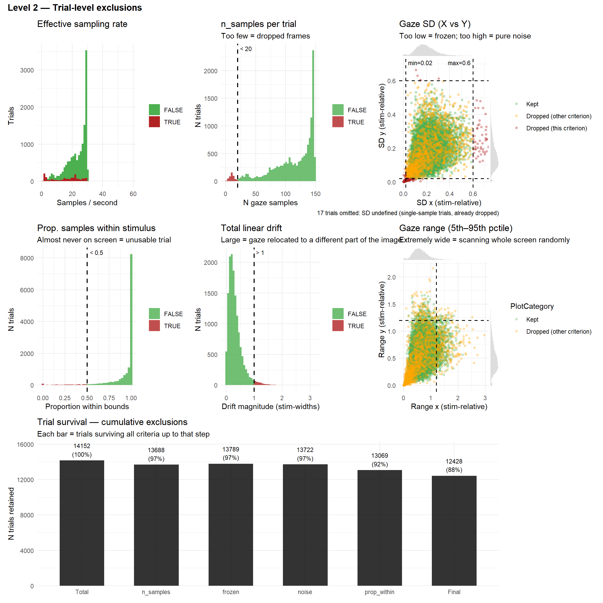
p_bcea <- df_features |>
mutate(Dropped = Status != "Kept",
bcea_clipped = pmin(bcea, 1.5)) |> # clip extremes for readability
ggplot(aes(x = bcea_clipped, fill = Dropped)) +
geom_histogram(bins = 50, alpha = 0.8, position = "stack") +
scale_fill_manual(values = c("FALSE" = "#4CAF50", "TRUE" = "firebrick"),
labels = c("Kept", "Dropped")) +
scale_x_continuous(breaks = seq(0, 1.5, 0.25)) +
theme_minimal() +
labs(title = "BCEA (p = 0.68)",
subtitle = "Ellipse area containing 68% of gaze — large = scattered",
x = "BCEA (stim-widths²; clipped at 1.5)", y = "N trials", fill = NULL)
p_hull <- df_features |>
mutate(
Dropped = Status != "Kept",
hull_clipped = pmin(hull_area, quantile(hull_area, 0.99, na.rm = TRUE))
) |>
ggplot(aes(x = hull_clipped, fill = Dropped)) +
geom_histogram(bins = 50, alpha = 0.8) +
scale_fill_manual(values = c("FALSE" = "#4CAF50",
"TRUE" = "firebrick")) +
theme_minimal() +
labs(
title = "Convex hull area",
subtitle = "Robust spatial spread of gaze",
x = "Hull area (99th percentile clipped)",
y = "Trials",
fill = NULL
)
p_entropy <- df_features |>
mutate(Dropped = Status != "Kept") |>
ggplot(aes(x = entropy5, fill = Dropped)) +
geom_histogram(bins = 40, alpha = 0.8, position = "stack") +
geom_vline(xintercept = thresh_entropy,
linetype = "dashed", color = "black", linewidth = 0.8) +
annotate("text", x = thresh_entropy, y = Inf,
label = paste0("threshold = ", thresh_entropy),
vjust = 1.5, hjust = -0.1, size = 3) +
scale_fill_manual(values = c("FALSE" = "#4CAF50", "TRUE" = "firebrick"),
labels = c("Kept", "Dropped")) +
theme_minimal() +
labs(title = "Normalised spatial entropy",
subtitle = "~1 = uniform scatter (bad); ~0 = frozen (bad)",
x = "Entropy (normalised)", y = "N trials", fill = NULL)
p_gini <- df_features |>
mutate(Dropped = Status != "Kept") |>
ggplot(aes(x = gini_kde, fill = Dropped)) +
geom_histogram(bins = 40, alpha = 0.8, position = "stack") +
scale_fill_manual(values = c("FALSE" = "#4CAF50", "TRUE" = "firebrick"),
labels = c("Kept", "Dropped")) +
theme_minimal() +
labs(title = "Gini coefficient of 2D KDE",
subtitle = "~1 = sharp peaks / clustered (good); ~0 = flat / random (bad)",
x = "Gini (KDE)", y = "N trials", fill = NULL)
(p_bcea | p_hull) / (p_entropy | p_gini) +
plot_annotation(
title = "Spatial clustering metrics",
subtitle = "Univariate distributions of spatial spread and concentration",
theme = theme(plot.title = element_text(face = "bold", size = 13),
plot.subtitle = element_text(size = 10, color = "gray40"))
)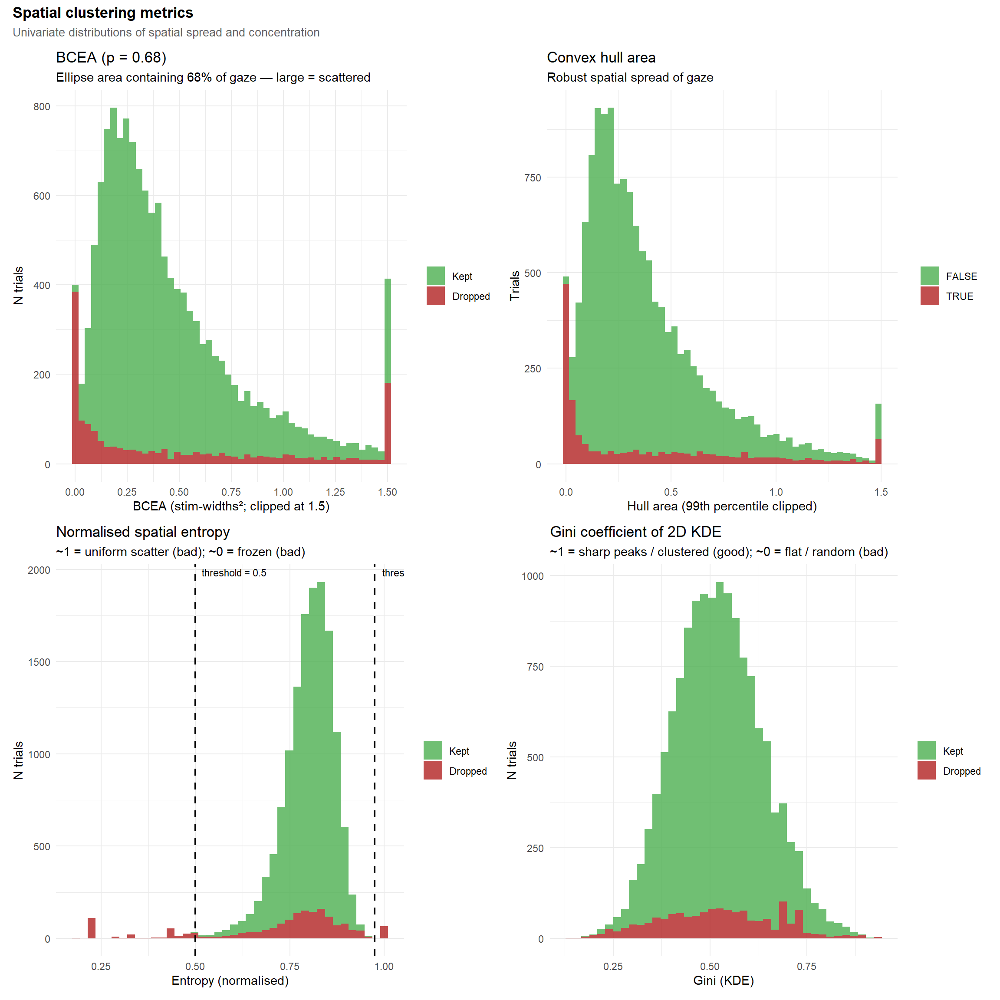
p_path <- df_features |>
mutate(Dropped = Status != "Kept") |>
ggplot(aes(path_length, fill = Dropped)) +
geom_histogram(bins = 50) +
scale_fill_manual(values = c("FALSE" = "#4CAF50",
"TRUE" = "firebrick")) +
theme_minimal() +
labs(title = "Total scanpath length", x = "Path length", y = "Trials", fill = NULL)
p_speed <- df_features |>
ggplot(aes(mean_speed, fill = Status != "Kept")) +
geom_histogram(bins = 50) +
scale_fill_manual(values = c("#4CAF50","firebrick")) +
theme_minimal() +
labs(title="Mean gaze speed", fill = NULL)
p_straight <- df_features |>
ggplot(aes(straightness, fill = Status != "Kept")) +
geom_histogram(bins = 50) +
scale_fill_manual(values = c("#4CAF50","firebrick")) +
theme_minimal() +
labs(title="Straightness index", fill = NULL)
p_half <- df_features |>
ggplot(aes(half_shift, fill = Status != "Kept")) +
geom_histogram(bins = 50) +
scale_fill_manual(values = c("#4CAF50","firebrick")) +
theme_minimal() +
labs(title="Centroid shift", fill = NULL)
p_dispersion <- df_features |>
ggplot(aes(dispersion_ratio, fill = Status != "Kept")) +
geom_histogram(bins = 50) +
scale_fill_manual(values = c("#4CAF50","firebrick")) +
theme_minimal() +
labs(title="Dispersion ratio", fill = NULL)
(p_path | p_speed | p_straight) / (p_half | p_dispersion) +
plot_annotation(
title = "Temporal dynamics metrics",
subtitle = "Univariate distributions of movement magnitude and trial evolution",
theme = theme(plot.title = element_text(face = "bold", size = 13),
plot.subtitle = element_text(size = 10, color = "gray40"))
)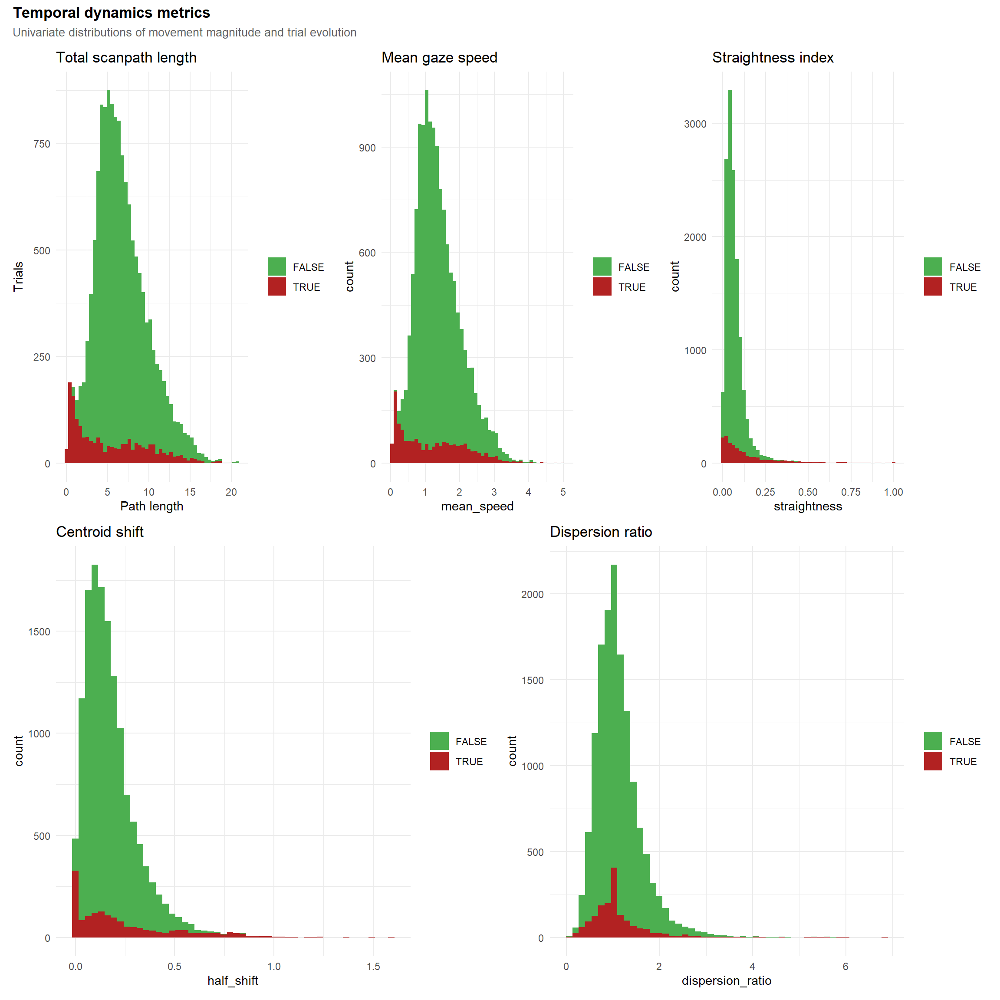
p_sd_bcea <- df_features |>
mutate(mean_sd = (sd_x + sd_y)/2) |>
ggplot(aes(mean_sd, bcea, colour=Status)) +
geom_point(alpha=.35) +
theme_minimal() +
labs(title="SD vs BCEA")
p_bcea_vs_hull <- df_features |>
ggplot(aes(x = pmin(bcea, 1.5), y = hull_area, colour = Status)) +
geom_point(alpha = 0.35, size = 1.2) +
theme_minimal() +
labs(title = "BCEA vs Hull area", subtitle = "Area assuming Gaussian vs robust area",
x = "BCEA", y = "Hull area")
p_hull_entropy <- df_features |>
ggplot(aes(hull_area, entropy5, colour = Status)) +
geom_point(alpha=.35) +
theme_minimal() +
labs(title="Hull area vs Entropy", subtitle="Large hull + high entropy = random exploration")
p_gini_vs_entropy <- df_features |>
ggplot(aes(x = entropy5, y = gini_kde, color = Status)) +
geom_point(alpha = 0.35, size = 1.2) +
geom_vline(xintercept = thresh_entropy, linetype = "dashed", color = "gray30", linewidth = 0.7) +
theme_minimal() +
labs(title = "Entropy vs. Gini KDE", subtitle = "Should be anti-correlated",
x = "Spatial entropy (higher = more uniform)", y = "Gini KDE (higher = more clustered)", color = "Status") +
theme(legend.position = "none")
p_bcea_vs_gini <- df_features |>
mutate(bcea_clipped = pmin(bcea, 1.5)) |>
ggplot(aes(x = bcea_clipped, y = gini_kde, color = Status)) +
geom_point(alpha = 0.35, size = 1.2) +
theme_minimal() +
labs(title = "BCEA vs. Gini KDE", subtitle = "Large BCEA + low Gini = diffuse random scatter",
x = "BCEA (clipped at 1.5)", y = "Gini KDE", color = "Status") +
theme(legend.position = "none")
p_path_vs_straight <- df_features |>
ggplot(aes(path_length, straightness, colour = Status)) +
geom_point(alpha = .35) +
theme_minimal() +
labs(title = "Path length vs Straightness", subtitle = "Long paths separate from directed movements") +
theme(legend.position = "none")
p_shift <- df_features |>
ggplot(aes(half_shift, dispersion_ratio, colour = Status)) +
geom_point(alpha = .35) +
theme_minimal() +
labs(title = "Centroid shift vs Dispersion ratio", subtitle = "Temporal evolution of gaze") +
theme(legend.position = "none")
(p_sd_bcea | p_bcea_vs_hull | p_hull_entropy) /
(p_gini_vs_entropy | p_bcea_vs_gini | plot_spacer()) /
(p_path_vs_straight | p_shift | plot_spacer()) +
plot_layout(guides = "collect") +
plot_annotation(
title = "Feature Relationships",
subtitle = "Bivariate associations between spatial and temporal metrics",
theme = theme(plot.title = element_text(face = "bold", size = 13),
plot.subtitle = element_text(size = 10, color = "gray40"))
)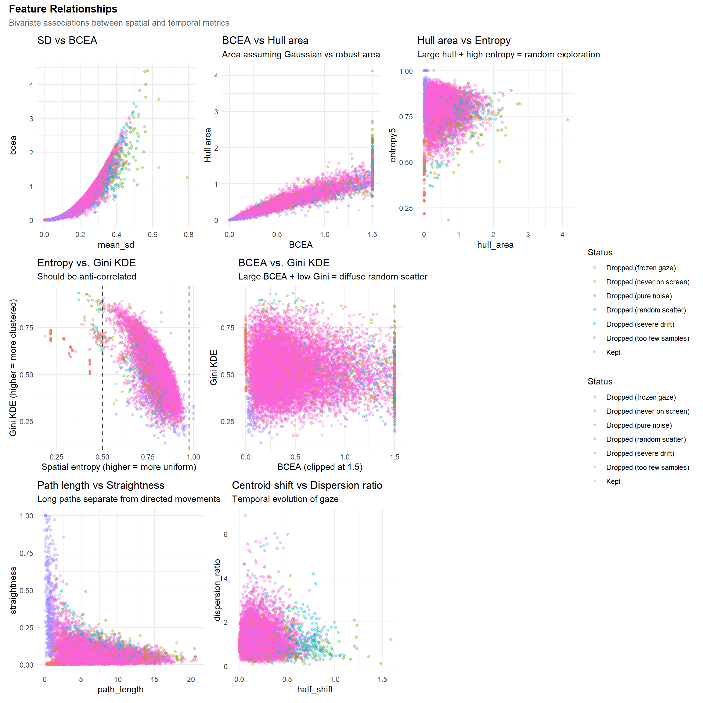
df_features <- df_features |>
filter(Status == "Kept") |>
select(-Status)
df <- df |>
filter(paste(Participant, Item) %in% paste(df_features$Participant, df_features$Item))Calibration scores relate to the % of gaze in the target areas during the calibration phase. One of them took place at the beginning, and the second one in the middle.
p_val1 <- df_ppt |>
ggplot(aes(x=Value, y=Participant)) +
geom_bar(stat="identity", aes(fill=Index), position = position_dodge2(reverse=TRUE)) +
theme_minimal() +
labs(title="Calibration Scores", fill="Calibration Phase", color="Calibration Phase", x="Calibration Score", y=NULL) +
theme(legend.position = "inside", legend.position.inside = c(0.9, 0.1),
axis.text.y = element_blank()) +
ggside::geom_xsidedensity(aes(fill=Index, color=Index), alpha=0.3) +
ggside::theme_ggside_void() +
scale_fill_manual(values=c("forestgreen", "orange")) +
scale_color_manual(values=c("forestgreen", "orange"))
p_val2 <- df_ppt |>
pivot_wider(names_from="Index", values_from="Value") |>
ggplot(aes(x=Initial, y=Midtask)) +
geom_abline(intercept=0, slope=1, linetype="dashed") +
geom_point2(size=3, alpha=0.5, color="forestgreen") +
geom_smooth(method="lm", formula = 'y ~ x', color="forestgreen") +
theme_minimal() +
labs(title="Initial vs. Midtask Calibration Scores")
features_ppt <- df_features |>
summarise(
n_samples_total = sum(n_samples, na.rm=TRUE),
n_samples_median = mean(n_samples, na.rm=TRUE),
mean_bcea = mean(bcea, na.rm=TRUE),
mean_entropy = mean(entropy5, na.rm=TRUE),
mean_gini_kde = mean(gini_kde, na.rm=TRUE),
mean_path_length = mean(path_length, na.rm=TRUE),
mean_straightness = mean(straightness, na.rm=TRUE),
.by = "Participant"
)
p_val3 <- features_ppt |>
mutate(status = ifelse(n_samples_total < 2000, "Dropped", "Kept")) |>
ggplot(aes(x=n_samples_total, y=n_samples_median)) +
geom_point(aes(color = status), alpha=0.5)
(p_val1 | p_val2) / p_val3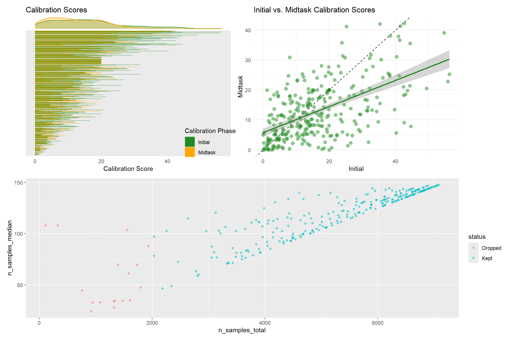
exclude <- features_ppt |>
filter(n_samples_total < 2000) |>
pull(Participant)
df_features <- filter(df_features, !Participant %in% exclude)
df <- filter(df, !Participant %in% exclude)We excluded 17 participants with fewer than 2000 valid gaze samples across all trials.
# 1. Select the core numeric features (drop quality-control features)
df_num <- df_features |>
select(-Participant, -Item) |>
drop_na() # Require complete cases for hierarchical clustering
# plot(n_factors(df_num, n_max = 10))
# fa <- factor_analysis(df_num, n = 5, sort = TRUE, threshold = 0.5)
# fa <- parameters::factor_analysis(mtcars, n = 5, sort = TRUE, threshold = 0.5)
# 2. Compute correlation matrix & hierarchical clustering
cor_mat <- cor(df_num, method = "spearman")
# Use 1 - |r| for distance so highly correlated features group together
dist_mat <- as.dist(1 - abs(cor_mat))
hc <- hclust(dist_mat, method = "complete")
# 3. Extract order and dendrogram data
var_order <- hc$labels[hc$order]
dendro_data <- ggdendro::dendro_data(hc, type = "rectangle")
# 4. Prepare heatmap data for ggplot
cor_df <- cor_mat |>
as.data.frame() |>
rownames_to_column("Var1") |>
pivot_longer(cols = -Var1, names_to = "Var2", values_to = "corr") |>
mutate(
# Relevel factors to match the hierarchical clustering order
Var1 = factor(Var1, levels = var_order),
Var2 = factor(Var2, levels = var_order)
)
# 5. Build Heatmap (Text on Left, Legend Removed)
p_cor_mat <- ggplot(cor_df, aes(x = Var1, y = Var2, fill = corr)) +
geom_tile(color = "white", linewidth = 0.5) +
scale_fill_distiller(
palette = "RdBu", limits = c(-1, 1), direction = -1, guide = "none"
) +
# Default y-axis position is left. Just set the expansion.
scale_y_discrete(expand = c(0, 0.5)) +
scale_x_discrete(expand = c(0, 0.5)) +
theme_minimal() +
theme(
axis.text.x = element_text(angle = 45, hjust = 1, vjust = 1),
axis.title = element_blank(),
panel.grid = element_blank()
)
# 6. Build Dendrogram (Right side, branches pointing Left)
p_dendro_side <- ggplot(ggdendro::segment(dendro_data)) +
geom_segment(aes(x = x, y = y, xend = xend, yend = yend)) +
coord_flip() +
# Match the continuous expansion factor to the discrete heatmap to align rows
scale_x_continuous(expand = c(0, 0.5)) +
# By NOT reversing the y-axis, 0 remains on the left, making branches point to the matrix
scale_y_continuous(expand = c(0, 0)) +
theme_void() +
theme(plot.margin = margin(0, 0, 0, 0))
# 7. Compose using patchwork (Heatmap | Dendrogram)
patch_cor <- (p_cor_mat | p_dendro_side) +
plot_layout(widths = c(5, 1)) +
plot_annotation(
title = "Feature Correlation Matrix",
subtitle = "Hierarchical clustering of spatial and temporal gaze metrics",
theme = theme(
plot.title = element_text(face = "bold", size = 13),
plot.subtitle = element_text(size = 10, color = "gray40")
)
)
patch_cor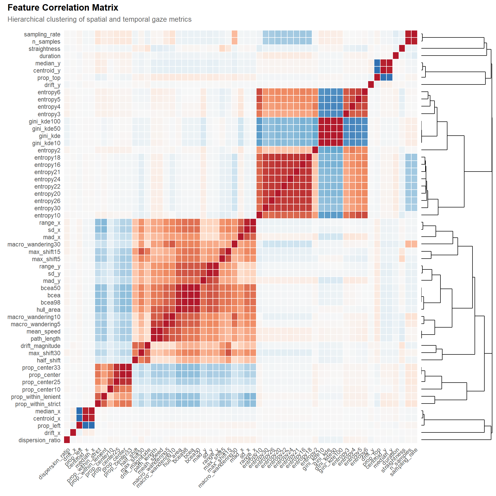
df_final <- df_features |>
select(Participant, Item,
# Gaze_Entropy20 = entropy20,
Gaze_Entropy = entropy5,
# Gaze_Gini = gini_kde, # Correlates less with nsamples
Gaze_Drift = drift_magnitude,
# Gaze_Hull = hull_area,
Gaze_pLeft = prop_left,
Gaze_pCenter = prop_center,
Gaze_pTop = prop_top,
Gaze_nSamples = n_samples
)
write.csv(df_final, "../data/data_eyetracking.csv", row.names = FALSE)df_final |>
pivot_longer(cols = -c(Participant, Item), names_to = "Feature", values_to = "Value") |>
ggplot(aes(x = Value)) +
geom_histogram(bins = 50, alpha = 0.8, fill = "steelblue") +
facet_wrap(~Feature, scales = "free") 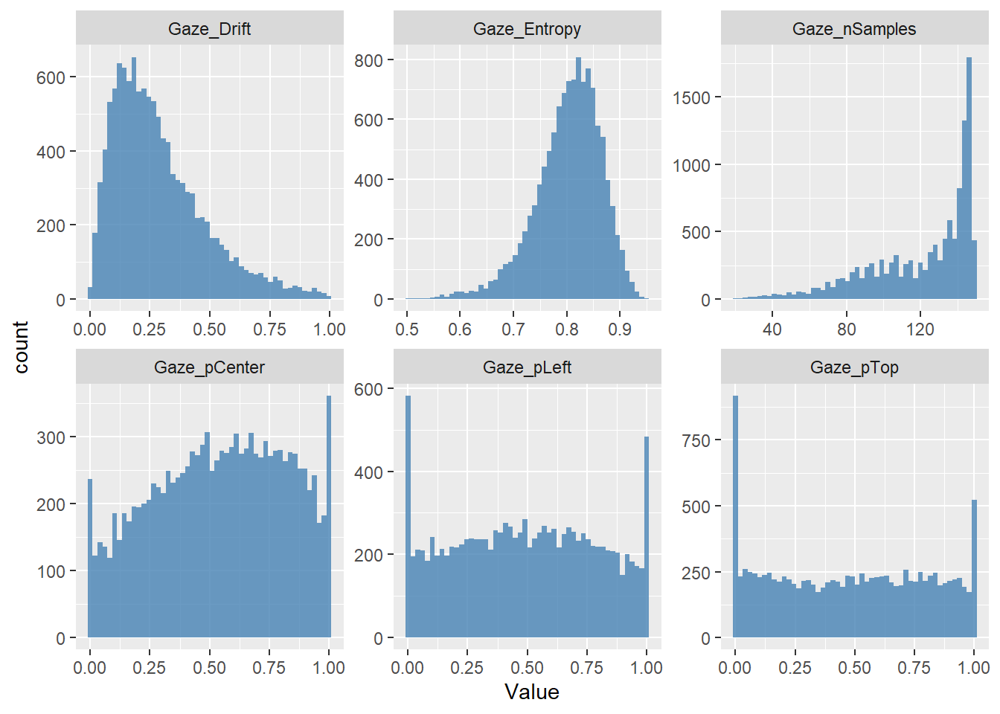
correlation(df_final, redundant = TRUE) |>
cor_sort() |>
summary() |>
plot()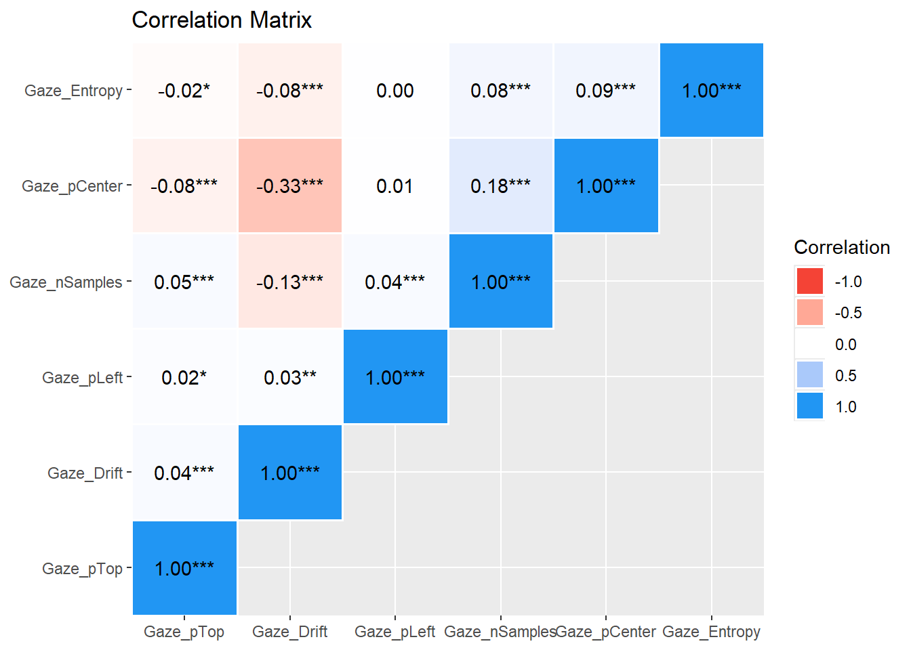
dftask <- read.csv("../data/data_task.csv") |>
mutate(Condition = fct_relevel(Condition, "Human Original", "Human Forgery", "AI-Generated"),
Emotion = fct_relevel(Emotion, "Positive - Low intensity", "Negative - Low intensity", "Positive - High intensity", "Negative - High intensity"))
dftask <- dplyr::left_join(df_final, dftask, by = c("Participant", "Item"))
rez_cor <- data.frame()
for(outcome in c("Beauty", "Meaning", "Valence", "Worth")) {
for(feature in names(select(df_final, -Participant, -Item, -Gaze_nSamples))) {
f <- paste0(outcome, " ~ ", feature, " + Gaze_nSamples + (1|Participant) + (1|Item)")
m <- glmmTMB::glmmTMB(as.formula(f), data = dftask)
param <- parameters::parameters(m, effects = "fixed")
rez_cor <- rbind(rez_cor,
effectsize::z_to_r(
param$z[2],
n = degrees_of_freedom(m, method = "analytical")) |>
mutate(p = param$p[2],
Outcome = outcome, Feature = feature))
}
}
rez_cor |>
arrange(p) |>
format_table() |>
gt::gt()| r | 95% CI | p | Outcome | Feature |
|---|---|---|---|---|
| 0.03 | [ 0.01, 0.05] | < .001 | Meaning | Gaze_Entropy |
| 0.03 | [ 0.01, 0.05] | 0.001 | Beauty | Gaze_Entropy |
| 0.02 | [ 0.00, 0.04] | 0.020 | Worth | Gaze_Entropy |
| 0.02 | [ 0.00, 0.04] | 0.039 | Valence | Gaze_Entropy |
| -0.01 | [-0.03, 0.01] | 0.207 | Meaning | Gaze_Drift |
| 0.01 | [-0.01, 0.03] | 0.247 | Beauty | Gaze_pLeft |
| 0.01 | [-0.01, 0.03] | 0.251 | Meaning | Gaze_pTop |
| -9.17e-03 | [-0.03, 0.01] | 0.316 | Worth | Gaze_pCenter |
| -8.77e-03 | [-0.03, 0.01] | 0.338 | Worth | Gaze_Drift |
| -8.75e-03 | [-0.03, 0.01] | 0.339 | Valence | Gaze_Drift |
| -6.64e-03 | [-0.02, 0.01] | 0.468 | Beauty | Gaze_Drift |
| -5.49e-03 | [-0.02, 0.01] | 0.549 | Valence | Gaze_pCenter |
| -3.80e-03 | [-0.02, 0.01] | 0.678 | Worth | Gaze_pLeft |
| 3.45e-03 | [-0.01, 0.02] | 0.706 | Valence | Gaze_pTop |
| 2.54e-03 | [-0.02, 0.02] | 0.782 | Meaning | Gaze_pCenter |
| -2.41e-03 | [-0.02, 0.02] | 0.792 | Valence | Gaze_pLeft |
| -2.09e-03 | [-0.02, 0.02] | 0.820 | Worth | Gaze_pTop |
| -1.24e-03 | [-0.02, 0.02] | 0.892 | Beauty | Gaze_pTop |
| -1.12e-03 | [-0.02, 0.02] | 0.903 | Beauty | Gaze_pCenter |
| 1.81e-04 | [-0.02, 0.02] | 0.984 | Meaning | Gaze_pLeft |
# rez <- data.frame()
# for(feature in names(select(df_final, -Participant, -Item))) {
# f <- paste0(feature, " ~ Condition + (1|Participant) + (1|Item)")
# m <- glmmTMB::glmmTMB(as.formula(f), data = dftask)
# rez <- rbind(rez, parameters::parameters(m, effects = "fixed") |>
# mutate(Feature = feature))
# }
#
# rez |>
# arrange(p) |>
# format_table() |>
# gt::gt()# high_quality_ppts <- unique(arrange(df_ppt, desc(Value))$Participant[1:20])
# df |>
# filter(Stimulus == "Fixation",
# # Participant %in% c(high_quality_ppts),
# !is.na(z_x), !is.na(z_y)) |>
# filter(Stimulus == "Fixation") |>
# ggplot(aes(x = z_x, y = z_y)) +
# geom_vline(xintercept = 0, linetype = "dashed", color = "black", linewidth = 0.8) +
# geom_hline(yintercept = 0, linetype = "dashed", color = "black", linewidth = 0.8) +
# geom_point(aes(color=Participant), alpha = 0.2, shape = 4) +
# stat_ellipse(aes(color=Participant)) +
# scale_y_reverse() +
# guides(color = "none") +
# coord_fixed() +
# theme_minimal()# item_names <- unique(df$Item)[1:9]
# plot_margin <- 0.05
#
# # ── helper ────────────────────────────────────────────────────────────────────
# make_gaze_plot <- function(item_name) {
#
# stim_img <- image_read(paste0("../experiment/stimuli/stimuli/", item_name))
# img_ratio <- image_info(stim_img)$height / image_info(stim_img)$width
#
# df_agg <- df |>
# filter(Item == item_name,
# # Participant %in% high_quality_ppts,
# Stimulus != "Fixation",
# !is.na(z_x_stim), !is.na(z_y_stim))
#
# if (nrow(df_agg) == 0) return(NULL)
#
# box_ratio <- mean(df_agg$Stimulus_height / df_agg$Stimulus_width, na.rm = TRUE)
#
# if (img_ratio > box_ratio) {
# draw_height <- box_ratio
# draw_width <- box_ratio / img_ratio
# } else {
# draw_width <- 1.0
# draw_height <- img_ratio
# }
#
# draw_xmin <- -draw_width / 2; draw_xmax <- draw_width / 2
# draw_ymin <- -draw_height / 2; draw_ymax <- draw_height / 2
#
# ggplot(df_agg, aes(x = z_x_stim, y = z_y_stim)) +
# annotation_raster(stim_img,
# xmin = draw_xmin, xmax = draw_xmax,
# ymin = draw_ymin, ymax = draw_ymax) +
# stat_density_2d(aes(fill = after_stat(level)),
# geom = "polygon", alpha = 0.1, bins = 20, n = 200, adjust = 0.5) +
# scale_fill_viridis_c(option = "inferno", guide = "none") +
# # geom_point(aes(color = Participant), alpha = 0.05, shape = 4) +
# scale_y_reverse() +
# guides(color = "none") +
# coord_fixed(
# xlim = c(draw_xmin - plot_margin, draw_xmax + plot_margin),
# ylim = c(draw_ymin - plot_margin, draw_ymax + plot_margin),
# expand = FALSE
# ) +
# theme_void() +
# labs(title = item_name)
# }
#
# # ── assemble ──────────────────────────────────────────────────────────────────
# plots <- lapply(item_names, make_gaze_plot) |> Filter(Negate(is.null), x = _)
#
# wrap_plots(plots, ncol = 3) # adjust ncol to tastefeature_meta <- tribble(
~col, ~label, ~lo_desc, ~hi_desc,
# "gini_kde", "Gaze Gini", "Flat / diffuse density", "Peaked / concentrated",
# "drift_magnitude", "Gaze Drift", "Spatially stable", "Systematic drift",
# "hull_area", "Gaze Hull", "Compact scanpath", "Wide exploration",
"prop_left", "P(Left)", "Right-biased gaze", "Left-biased gaze",
"prop_center", "P(Center)", "Peripheral gaze", "Centre-biased gaze",
"prop_top", "P(Top)", "Bottom-biased gaze", "Top-biased gaze",
"entropy20", "Entropy", "Structured / clustered", "Uniform scatter"
)
img_dir <- "../experiment/stimuli/stimuli/"
# ── Item selector ─────────────────────────────────────────────────────────────
# `excluded` accumulates across features so each gets a distinct stimulus.
find_best_item <- function(feature_col, excluded = character(0), min_n_each = 5) {
items_ranked <- df_features |>
count(Item, sort = TRUE) |>
filter(!Item %in% excluded) |>
pull(Item)
for (item in items_ranked) {
vals <- df_features |>
filter(Item == item) |>
pull(!!sym(feature_col)) |>
na.omit()
if (length(vals) < min_n_each * 2) next
if (IQR(vals) < 1e-6) next
if (sum(vals <= quantile(vals, .25)) >= min_n_each &&
sum(vals >= quantile(vals, .75)) >= min_n_each) return(item)
}
NA_character_
}
# Pre-assign one distinct item per feature before rendering anything
used_items <- character(0)
assigned <- character(nrow(feature_meta))
for (i in seq_len(nrow(feature_meta))) {
it <- find_best_item(feature_meta$col[i], excluded = used_items)
assigned[i] <- it
if (!is.na(it)) used_items <- c(used_items, it)
}
feature_meta$item <- assigned
# ── Contrast figure ───────────────────────────────────────────────────────────
make_contrast <- function(col, label, lo_desc, hi_desc, item) {
if (is.na(item)) { message("No suitable item for: ", col); return(NULL) }
feat <- df_features |>
filter(Item == item) |>
select(Participant, val = !!sym(col)) |>
filter(!is.na(val))
ppts_lo <- feat |> filter(val <= quantile(val, .25)) |> pull(Participant)
ppts_hi <- feat |> filter(val >= quantile(val, .75)) |> pull(Participant)
gaze_lo <- df |> filter(Item == item, Participant %in% ppts_lo, Stimulus == "Image")
gaze_hi <- df |> filter(Item == item, Participant %in% ppts_hi, Stimulus == "Image")
if (nrow(gaze_lo) < 10 || nrow(gaze_hi) < 10) return(NULL)
stim_img <- tryCatch(image_read(file.path(img_dir, item)), error = function(e) NULL)
# ── Letterbox-aware bounds ─────────────────────────────────────────────────
# Use ALL retained gaze for this item so both panels share identical bounds,
# regardless of any display-size variation between participant subgroups.
all_gaze <- df |> filter(Item == item, Stimulus == "Image")
bounds <- if (!is.null(stim_img)) {
ir <- image_info(stim_img)$height / image_info(stim_img)$width
br <- mean(all_gaze$Stimulus_height / all_gaze$Stimulus_width, na.rm = TRUE)
if (!is.finite(br)) br <- ir
# ir > br : image taller than container → pillarboxed (bars on sides)
# ir ≤ br : image wider than container → letterboxed (bars top/bottom)
if (ir > br) {
list(xmin = -(br/ir)/2, xmax = (br/ir)/2, ymin = -br/2, ymax = br/2)
} else {
list(xmin = -0.5, xmax = 0.5, ymin = -ir/2, ymax = ir/2)
}
} else {
list(xmin = -0.5, xmax = 0.5, ymin = -0.3, ymax = 0.3)
}
pad <- 0
xlim_p <- c(bounds$xmin - pad, bounds$xmax + pad)
ylim_p <- c(bounds$ymin - pad, bounds$ymax + pad)
# ── Single panel ─────────────────────────────────────────────────────────
one_panel <- function(gaze_df, title_str, subtitle_str) {
p <- ggplot(gaze_df, aes(x = z_x_stim, y = z_y_stim))
if (!is.null(stim_img))
p <- p + annotation_raster(stim_img,
xmin = bounds$xmin, xmax = bounds$xmax,
ymin = bounds$ymin, ymax = bounds$ymax)
p +
stat_density_2d(aes(fill = after_stat(level)),
geom = "polygon", alpha = 0.25,
bins = 10, n = 150, adjust = 0.6) +
scale_fill_viridis_c(option = "magma", guide = "none") +
scale_y_reverse() +
coord_fixed(xlim = xlim_p, ylim = ylim_p, expand = FALSE) +
theme_void() +
labs(title = title_str, subtitle = subtitle_str) +
theme(
plot.title = element_text(face = "bold", hjust = 0.5, size = 10),
plot.subtitle = element_text(hjust = 0.5, size = 8, color = "gray40"),
plot.margin = ggplot2::margin(4, 8, 4, 8)
)
}
wrap_elements((one_panel(gaze_lo, "Low", lo_desc) |
one_panel(gaze_hi, "High", hi_desc)) +
plot_annotation(
title = label,
theme = theme(
plot.title = element_text(face = "bold", size = 13, hjust = 0.5)
)
))
}
# ── Render ────────────────────────────────────────────────────────────────────
contrast_plots <- purrr::pmap(feature_meta, make_contrast) |>
Filter(Negate(is.null), x = _)
wrap_plots(contrast_plots, ncol = 2)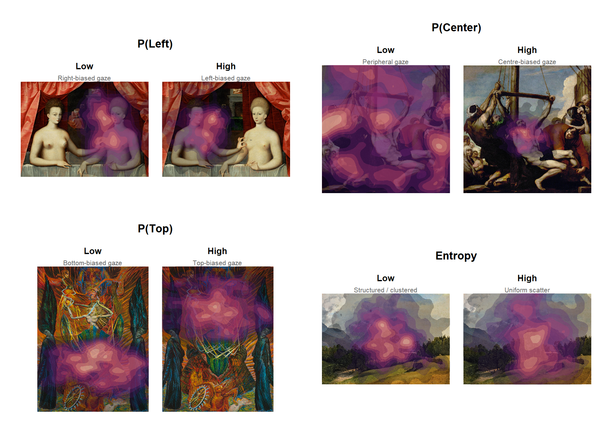